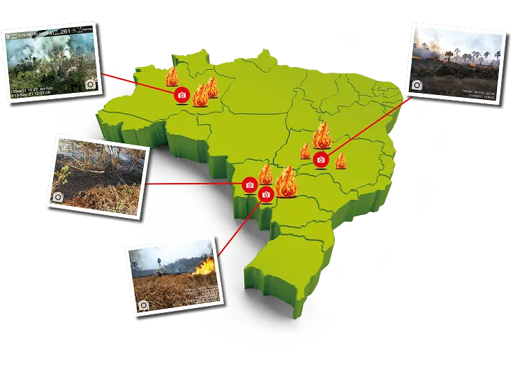

Ferramenta para coletar fotografias in situ de queimadas, incêndios florestais e seus impactos.

Aplicações
- Entender os mecanismos indutores do fogo.
- Guiar políticas públicas.
- Melhorar a compreensão do regime de fogo.
- Apoiar os esforços de planejamento e resposta às emergências.
- Estudos ecológicos de restauração para recuperação dos ecossistemas pós-incêndio.